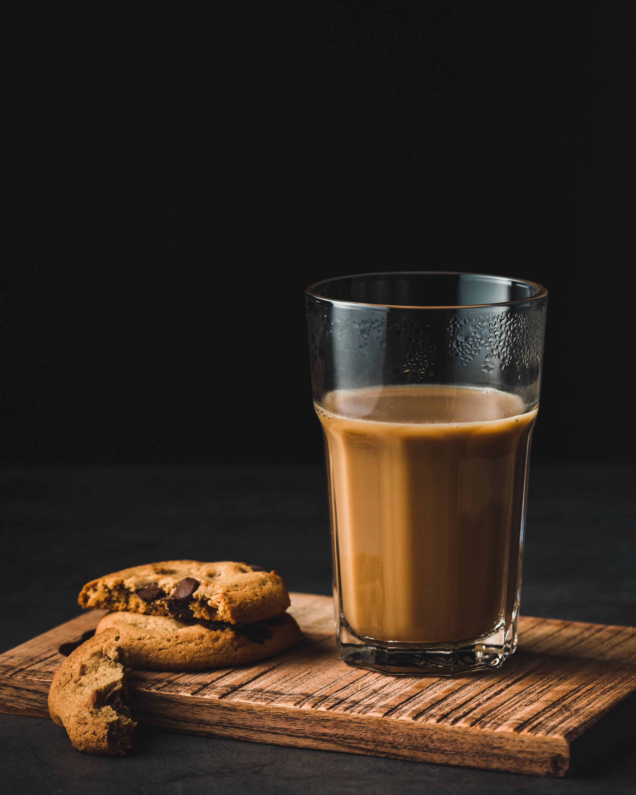

Masala Chai

Description
There’s something magical about chai.I’ve grown up watching my mom brew the perfect cup every morning — a little ritual that filled our kitchen with the warm, spicy aroma of cardamom, cloves, and ginger.
Especially in winter, nothing beats wrapping your hands around a steaming cup of adrak wali chai (ginger tea), feeling the warmth seep into your bones while fog curls up on the windows.
Masala Chai isn't just a drink — it's a feeling. A moment of pause. A tradition passed down. And honestly, it’s so easy to make at home, you’ll never go back to the store-bought stuff once you try this recipe.Let’s make some!
Ingredients
- 1 cup water
- 1 cup full-fat milk (or plant-based milk)
- 2 tsp loose black tea leaves (or 2 black tea bags – Assam or Darjeeling work great)
- 2 tsp sugar (adjust to taste)
- 1-inch piece of fresh ginger, grated
- 2 green cardamom pods, slightly crushed
- 2 cloves
- 1 small cinnamon stick (or ½ tsp ground cinnamon)
- 4-5 black peppercorns (optional – for a bit of heat)
- 1 star anise (optional – for a more aromatic touch)
How to Make Masala Chai
- Make the spice mix: In a mortar and pestle or spice grinder, lightly crush the cardamom, cloves, cinnamon, peppercorns, and star anise. No need to grind it fine – just enough to release their oils.
- Boil the spices : In a small saucepan, bring 1 cup of water to a boil. Add the crushed spices and grated ginger. Let it simmer for 2-3 minutes so the spices release their flavor.
- Add tea leaves: Stir in the black tea leaves (or tea bags) and simmer for another 1-2 minutes, depending on how strong you like it.
- Add milk & sugar: Pour in 1 cup of milk and add sugar to taste. Bring it back to a gentle boil. Watch it carefully so it doesn’t boil over — this is where the magic happens!
- Simmer & steep: Let the chai simmer on low for another 2-3 minutes. This allows all the flavors to come together into that rich, creamy blend.
- Strain & serve: Strain the chai into cups using a fine mesh strainer. Serve hot, maybe with some biscuits or rusk on the side.
Home